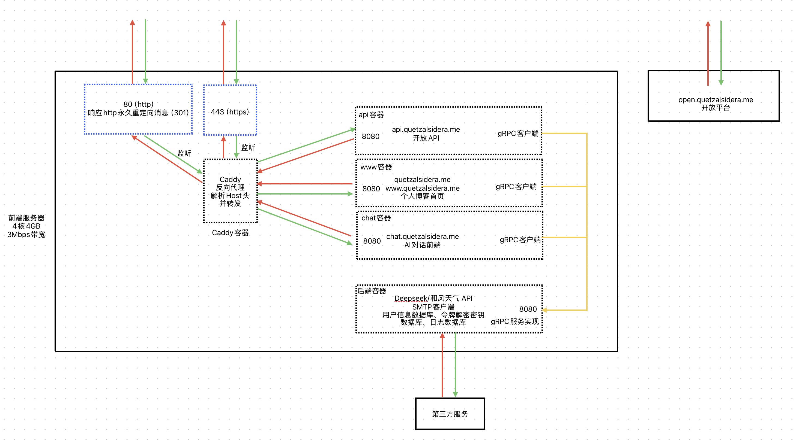

🌐 QuetzalSidera.Me 项目介绍
项目示意图

技术栈
- 前端：ASP.NET Core Blazor · HTML/CSS · RESTful API · gRPC · Caddy（反向代理）
- 后端：EF Core · SQLite · gRPC · SMTP
- 部署：Docker（全容器化部署）
安全与架构
- 全站启用 HTTPS，证书由 Caddy + ZeroSSL 自动化管理。
- 部署仅开放 80 / 443 端口，其余端口仅在容器内部可见。
- 所有组件均使用 原生 Blazor + HTML/CSS/C# 构建，无任何第三方UI框架依赖。
⚙️ 架构设计理念
传统 Blazor 项目前后端是不分离的，而 QuetzalSidera.Me 采用 前后端分离 + gRPC 通信 模式，处于以下考虑：
- 前后端分离部署：前端可在公网服务器运行，不需要公网IP的第三方服务部署在位于内网的后端，通过 Frp 穿透通信。
- 带宽优化：例如邮件验证码发送由后端完成，避免每次传输完整 HTML 内容。
- 数据隔离：AI 聊天上下文由后端维护，前端仅传输新消息，降低请求体大小。
- 统一后端服务：
- 在
chat.quetzalsidera.me注册的账号可用于 API 访问。 api.quetzalsidera.me可实时查询或修改www.quetzalsidera.me内容，实现互通。
- 在
- P.S.：最开始是计划做 物理意义 上的前后端分离的，前端位于公网服务器上，后端位于校园网内，但最后考虑到校园网环境并不稳定（
有稳定过吗），因此将后端项目同样部署于同一个云服务器上，通过容器网络通信。
🔗 gRPC v.s. RESTful
api.quetzalsidera.me开放API使用RESTful风格:
- 简单易用，易于编写API文档
- 接口清晰，维护成本低。
后端->前端通信使用gRPC:
- 支持 服务端流式输出，便于 AI 回复实时传输。
- 序列化高效，数据包更小。
.proto文件可同时生成 客户端与服务端接口，开发成本低。
🐳 容器化部署
- 多阶段构建：构建镜像与运行镜像分离，减少体积。
- 卷挂载隔离：用户数据 / 密钥文件 / 运行日志分卷存储，安全可控（
日志多了方便直接删日志库）。
#compose.yaml volumes: #数据卷 chat_data: www_data: api_data: #日志卷 log_data: www_log_data: chat_log_data: api_log_data: #密钥卷 www_key_data: chat_key_data: api_key_data: #Caddy卷 caddy_data: caddy_logs:
- 最小暴露面：仅反向代理容器映射物理端口，防止多余端口暴露。
#Caddy反向代理
caddy:
#...
ports:
- "80:80"
- "443:443"
networks:
- front-network
#...
📝 子项目说明
🌐 www.quetzalsidera.me
个人博客前端，为了搜索引擎优化而采用了服务端渲染，数据均来自后端数据库，并在前端内存中进行缓存（大部分内容缓存1小时，天气组件缓存18分钟），可通过 API 动态修改内容。
💬 chat.quetzalsidera.me
网页端 AI 聊天项目，AI 角色为《蔚蓝档案》千禧年科技学院游戏开发部机器人 爱丽丝 。提示词请参见文件：Backend/ThirdParty/Assistant/AgentPrompt.cs
1.用户数据如何进行同步
网页端每次加载时，会从浏览器LocalStorage中读取加密的令牌信息，并使用服务端的密钥进行解密，从后端同步历史对话记录网页端。为减少不必要的轮询，网页只会在"页面第一次渲染"或"登录成功"后从数据库获取历史记录，若您的同一账号在别的地方有未同步的历史记录，请 刷新页面 以同步
- 浏览器 LocalStorage 中保存加密令牌，服务端解密后同步历史对话。
var userGuid = await ProtectedLocalStorage.GetAsync<string>(AppState.UserGuidKey); var authToken = await ProtectedLocalStorage.GetAsync<string>(AppState.AuthTokenKey); var createTimestamp = await ProtectedLocalStorage.GetAsync<long>(AppState.CreateTimestampKey); //... await ChatService.GetUserInfoAsync(); await ChatService.SyncChatHistoryAsync();
- 无效令牌时自动申请临时用户并存储到LocalStorage（临时用户历史记录在12小时内无更新访问记录即清除）。
await ChatService.GetTempUserAsync();
try
{
await ProtectedLocalStorage.SetAsync(AppState.AuthTokenKey, ChatService.AuthToken.CookieString);
await ProtectedLocalStorage.SetAsync(AppState.UserGuidKey, ChatService.AuthToken.UserGuid);
await ProtectedLocalStorage.SetAsync(AppState.CreateTimestampKey, ChatService.AuthToken.CreateTimestamp);
}
catch
{
//...
}
- 登录/注册后临时会话记录自动合并至正式账户。
public async Task<List<ChatSessionModel>> SyncChatHistoryAsync()
{
//...
//非游客账户且本地记录条数不为0
if (AuthToken.IsRegistered && LocalHistory.History.Count != 0)
{
LocalHistory.UserGuid = AuthToken.UserGuid;
//合并记录到后端
await chatSessionService.MergeHistoryAsync(LocalHistory);
}
//...
}
2.用户数据安全如何保障
- 全站 HTTPS + AntiForgery Cookie防御CSRF/XSRF攻击,以下为源代码中部分内容，更多请参见微软官方文档。
// 持久化密钥到指定路径
builder.Services.AddDataProtection()
.PersistKeysToFileSystem(new DirectoryInfo(path))
.SetApplicationName("Chat.QuetzalSidera.Me");
//...
app.UseAntiforgery();
- 单次会话期间的用户身份鉴别由Blazor框架自动处理，用户长期令牌加密存储于 LocalStorage，密钥仅存在于服务端, 参见微软官方文档。
- 所有输入输出均进行 HTML 编码防止 XSS, 此部分由Blazor框架自动处理，参见微软官方文档。
- 密码采用 PBKDF2 + 盐 单向加密存储。
public static string HashPassword(string plainPassword)
{
// 生成随机盐
byte[] salt = GenerateRandomSalt();
// 使用 PBKDF2 进行哈希
byte[] hash = Pbkdf2(plainPassword, salt, Iterations, HashSize);
// 格式：算法$迭代次数$盐$哈希值（全部使用Base64）
return $"{AlgorithmIdentifier}{Delimiter}{Iterations}{Delimiter}{Convert.ToBase64String(salt)}{Delimiter}{Convert.ToBase64String(hash)}";
}
- 数据库仅对容器网络开放访问。
3.用户数据完整性如何保障
数据库为每位用户的历史记录分配了同步锁对象， 避免针对同一个账户的并发操作（如多终端登录）导致用户数据不一致
public static bool UpdateSession(AuthTokenModel authTokenModel, string sessionGuid, List<ChatMessageModel> messages,
string? title = null)
{
if (!HistoryLocks.ContainsKey(authTokenModel.UserGuid))
HistoryLocks.TryAdd(authTokenModel.UserGuid, new Lock());
lock (HistoryLocks[authTokenModel.UserGuid])
{
//数据库操作...
}
}
并且数据入库将在AI流式回复结束后进行，避免阻塞AI回复线程
public override async Task PostMessage(ChatMessagePostInfo request, IServerStreamWriter<ChatMessage> responseStream,
ServerCallContext context){
//...
//流式回复
await foreach (string responsePiece in deepsSeekClient.SendMessageAsync(messages))
{
//...
await responseStream.WriteAsync(new ChatMessageModel()
{
MessageGuid = responseGuid,
Timestamp = responseTimestamp,
Talker = Talker.Agent,
Message = responsePiece,
});
}
//回复结束，将记录插入数据库
DatabaseHelper.UpdateSession(authToken, session.SessionGuid, [message, response], title);
}
4.流式输出实现
在每轮对话中，AI的回复是实时生成的(流式)，而不是在回复生成结束后才被整体发送给用户(非流式)。由于第三方API请求均由后端发起，流式输出意味着从第三方服务器->后端->前端->用户页面的全链条都必须是流式的
- 第三方服务器->后端: DeepSeek API 提供流式输出。
public async IAsyncEnumerable<string> SendMessageAsync(List<ChatMessageModel> messages)
{
var client = new DeepSeek.Core.DeepSeekClient(ApiKey);
//...
var choices = client.ChatStreamAsync(request, CancellationToken.None);
await foreach (var response in choices)
{
yield return response.Delta?.Content ?? string.Empty;
}
}
- 后端->前端: 后端使用 gRPC 服务端流式传输至前端。
public override async Task PostMessage(ChatMessagePostInfo request, IServerStreamWriter<ChatMessage> responseStream,
ServerCallContext context)
{
//...
await foreach (string responsePiece in deepsSeekClient.SendMessageAsync(messages))
{
//...
await responseStream.WriteAsync(new ChatMessageModel()
{
MessageGuid = responseGuid,
Timestamp = responseTimestamp,
Talker = Talker.Agent,
Message = responsePiece,
});
}
//...
}
- 前端->用户页面: 前端通过 Blazor 差异化渲染AI回复气泡实现实时显示。
//流式输出
private async Task SendMessage(){
//...
await foreach (var response in responses)
{
messageModel.Message += response.Message;
//调用StateHasChanged触发组件重新渲染
StateHasChanged();
}
}
🔐 api.quetzalsidera.me
开放 RESTful API，在chat.quetzalsidera.me注册的用户可申请 API Token。
更多内容参见开放API文档
🧩 项目亮点
- 💡 原生 Blazor 前端动画
- 🧱 纯容器化架构
- 🔐 HTTPS 全站自动证书 + 全站 AntiForgery Cookie + 加密LocalStorage持久化令牌
- 🧮 数据库并发安全设计
- 🌐 前端多语言支持
- 🧠 流式输出
- 🔒 完整ICP备案 + 联网备案 + 安全评估